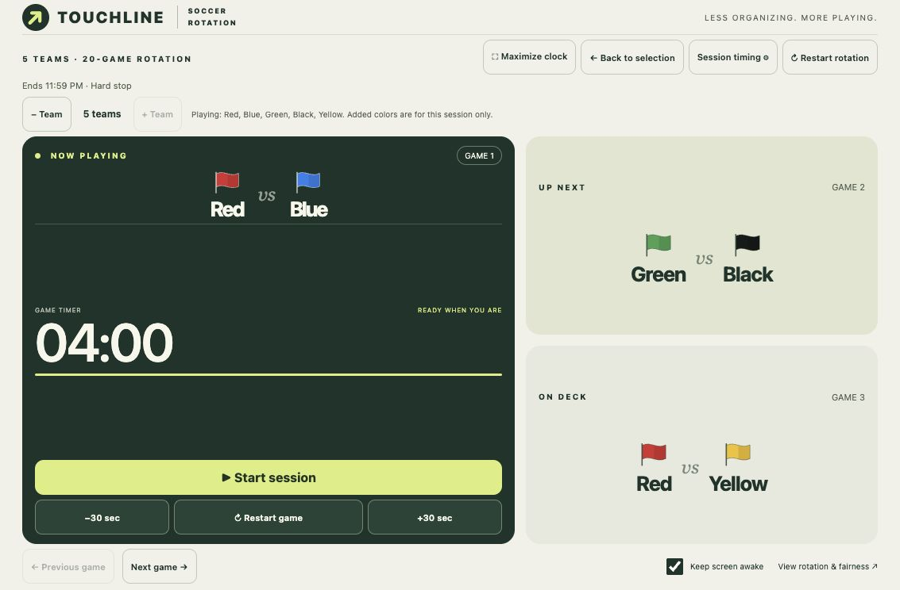
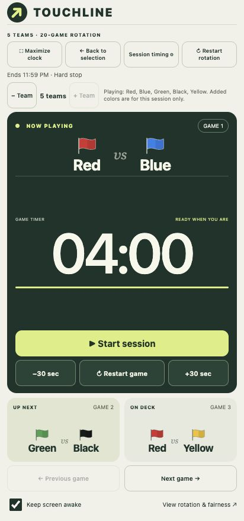
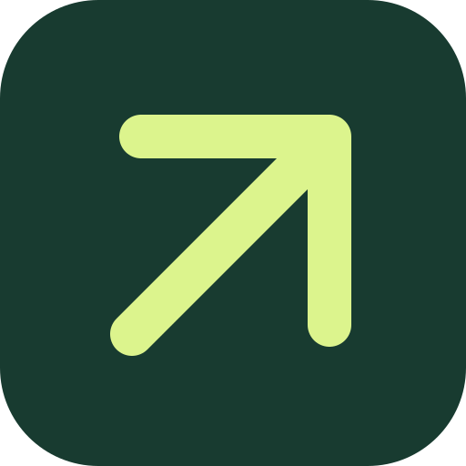
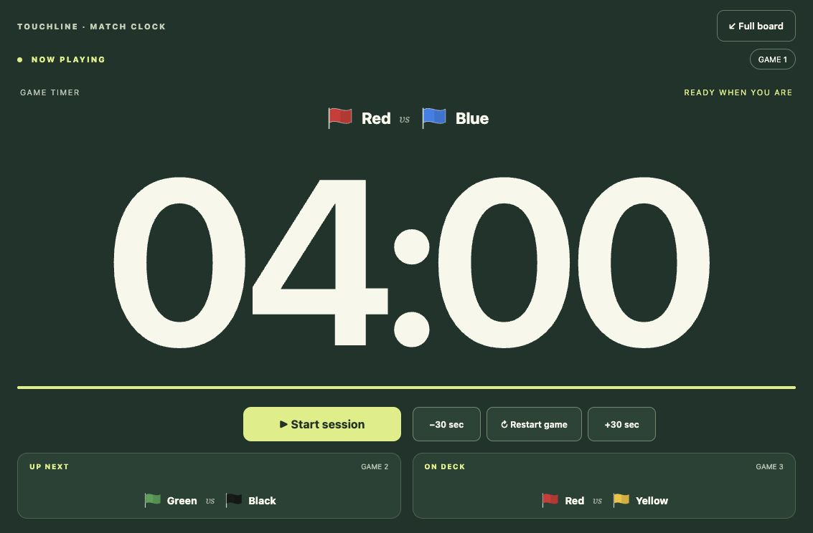

Your teams.
Your colors.
Choose two to five teams and give each a distinct color. Add a late arrival or remove a team during the session.
TOOLS FOR THE GAMES WE STILL LOVE
Meet Touchline. Your soccer rotation, match clock, and next two games—all in one clear view.
iPadAndroidMade for the sideline.


01 / A LITTLE STRUCTURE
Keep your eyes on the game. Touchline handles who’s playing, who’s next, and how long is left—so the sideline spends less time asking and more time playing.
Choose two to five teams and give each a distinct color. Add a late arrival or remove a team during the session.
Set game and changeover times. Pause, restart, or adjust by 30 seconds. Or skip the timer and advance games yourself.
Referee whistles, spoken warnings, team callouts, and an optional stadium roar. Native audio lowers other music during cues.
02 / BUILT FOR THE TOUCHLINE
Portrait or landscape. Phone or iPad.
A view that belongs beside the pitch.

TOUCHLINEMAXIMIZED CLOCK VIEW
Maximize the clock to put the current match front and center.
Tap an upcoming matchup to jump straight to that game.
Save your defaults locally, with separate settings for each team count.
03 / YOUR SESSION, YOUR CALL
Pickup games rarely stick to a script. Touchline lets you adjust without starting over.
Choose the color that’s arriving or leaving. A fresh rotation balances games from that point forward.
Set an end time: stop on the dot, finish the current game, or play only full games that fit.
Change session timings on the fly. Choose your sounds. Keep the screen awake. Your preferences stay on your device.
04 / BRING IT TO YOUR NEXT GAME
Touchline runs as a native app on iPad and Android.
Personal installation is available now.
Offline games, a full-screen clock, and native audio ducking. Install the Android app on your own device.
Android installation guide Not yet listed on Google Play.Bring a clear match board to the sideline. Personal installation uses Xcode on a Mac and a connected iPad.
iPad installation guide Not yet listed in the App Store. Free Apple signing lasts seven days.A FEW QUICK ANSWERS
No connection is needed during play. The native apps bundle the interface and recordings on your device.
The native apps request audio ducking so music on the same device can become quieter during Touchline’s cues and return afterward. The music app and audio output affect the result; Spotify ducking has been verified on Pixel.
Each team plays the same number of games over a complete rotation. The five-team schedule avoids back-to-back appearances, including when it loops. Two-, three-, and four-team schedules include consecutive appearances; Touchline flags these on the board.
Touchline is now focused on the native iPad and Android apps. This website showcases the app and links to installation instructions.